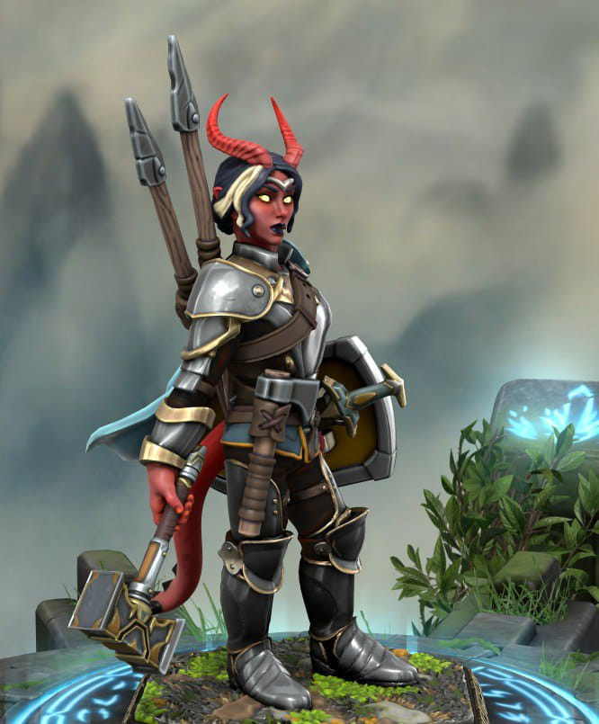
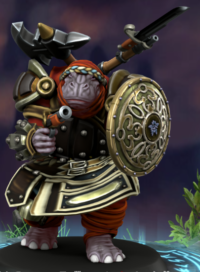
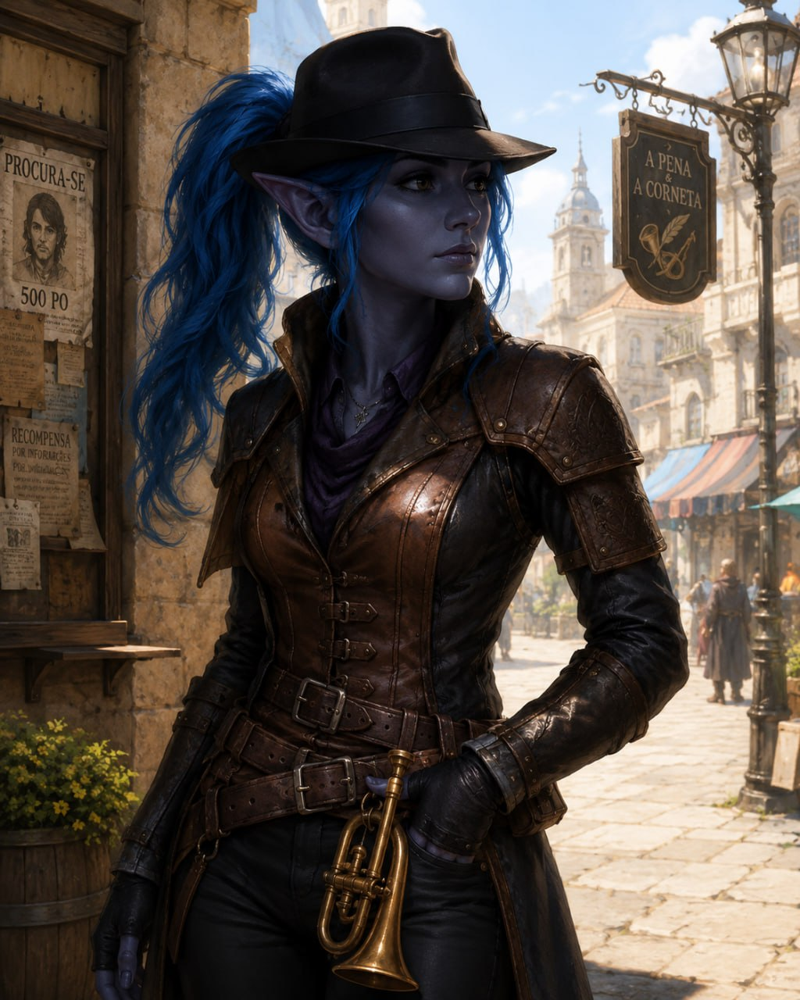
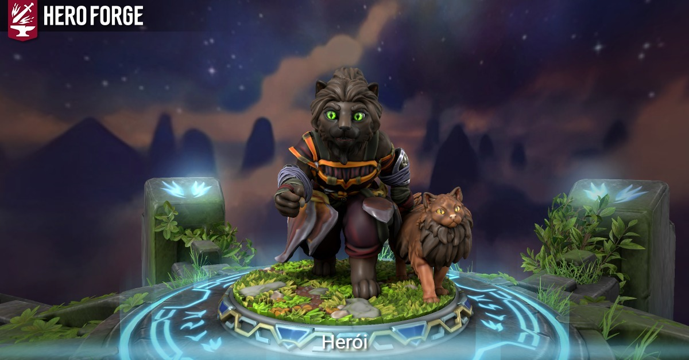
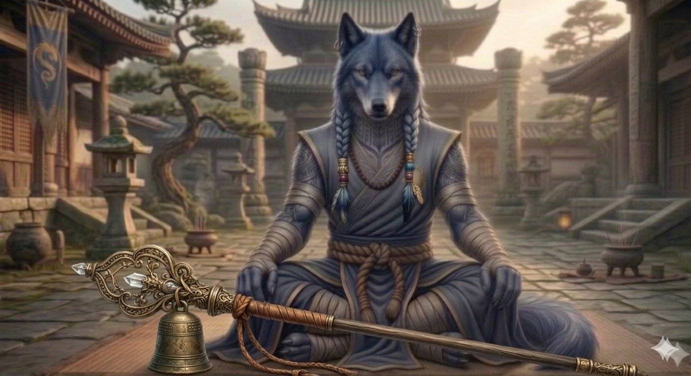
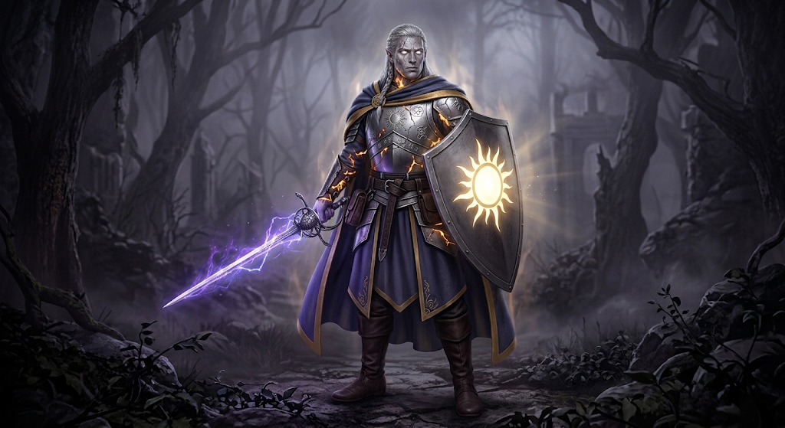

Personagens
Abra cada perfil para consultar aparência, resumo e equipamento atual.
Companhia e conhecidos
TK ajudou o grupo a escapar e ensinou técnicas para viver na Umbra. Gary e cinco auxiliares foram recuperados na oficina. O diário de Walter revelou a expedição dos moradores anteriores.
Amaya Paladina · Juramento da Vingança · Nível 5 · 65 PV

Aparência
Tem pele vermelha, olhos amarelos e cauda; é devota de Calistria.
Até aqui
Manifestou um banquinho ao se sentar, teleportou-se para escapar das correntes e atingiu o olho do gigante com uma zagaia. Enfrentou os kyrion na passagem para o Caminho.
No momento
Comprou Splint Mail por 180 Anima e Warhammer por 13.
Ver o grupo · Sessão 1 · Sessão 2
Personalidade em jogo
Direta e pouco cerimoniosa, responde aos obstáculos com ações concretas: escapou das correntes e acertou o olho do carcereiro com uma zagaia; diante dos kyrion, enfrentou um retiário com o martelo. Também cuida do preparo dos companheiros, como no mapa dos arredores. A pesquisa de costumes acrescenta cautela às conversas, sem retirar sua disposição para uma ofensa deliberada.
Chikonde Amandi Guerreiro · Arqueiro Arcano · Nível 5 · 65 PV

Aparência
Um giff armado e equipado para combate.
Até aqui
Recolheu o primeiro cristal de Anima; seu grito denunciou o grupo na caverna. Depois segurou as correntes do gigante para ajudar a fuga e enfrentou os kyrion com disparos, derrubando um conjurador no lago.
No momento
Encontrou uma Moeda da Dimensão e um Bracelete de Prata; comprou Mosquete por 450, Pistola por 225 e Escudo por 9 Anima.
Ver o grupo · Sessão 1 · Sessão 2
Personalidade em jogo
Enfrenta o perigo ostensivamente e abre espaço para os companheiros: segurou a corrente do carcereiro durante a fuga e avançou disparando contra os kyrion na retirada. Sua iniciativa pode preceder a cautela — um grito seu revelou a presença do grupo na caverna. A coleta de Anima acrescenta um lado metódico ao abastecimento do templo.
Jeremias Patrulheiro · Hollow Warden · Nível 5 · 75 PV

Aparência
Um alto elfo de aparência desalinhada, cabelos longos e cajado de pastor.
Até aqui
Explorou sozinho a Gorja, morreu e voltou algumas vezes; experimentou o vaso de TK e encontrou uma escada impossível. Na oficina, identificou a ligação mágica dos corpos com as almas e ajudou a derrubar o primeiro suporte sobre o golem.
No momento
Escolheu uma espada curta +1 e recolheu quatro reforços elementais.
Ver o grupo · Sessão 1 · Sessão 2
Personalidade em jogo
Curioso e persistente, aprende experimentando: comparou o crescimento dos vegetais dentro e fora do vaso e continuou explorando após morrer repetidas vezes. Na oficina, investigou os corpos com Detect Magic e derrubou um suporte sobre o golem com uma flecha. Participou da devolução dos equipamentos de TK e assinou o pedido de desculpas. A coleta de pedras prolonga seu interesse em descobrir utilidades no que encontra.
Juliana Barda · Colégio do Conhecimento · Nível 5 · 50 PV

Aparência
Usa um chapéu de detetive, como no retrato.
Até aqui
Usou Comando para imobilizar o carcereiro e medo para dispersar kyrion; copiou o mapa de TK. Na oficina, derrubou a porta sobre o guindaste, dirigiu o veículo e participou da queda das estruturas sobre o golem.
No momento
Ficou com o Ring of Radiation encontrado nos depósitos; identificado, acrescenta 1d6 ao dano de uma magia elemental, 3 usos por descanso longo.
Ver o grupo · Sessão 1 · Sessão 2
Personalidade em jogo
Toma a iniciativa e transforma o cenário em ferramenta: controlou o carcereiro com Comando, acionou a alavanca com Mage Hand e derrubou estruturas sobre o golem. Investigou os corpos e redigiu o pedido de desculpas a TK; também experimenta antes de ter todas as respostas, como ao dirigir o veículo e colocar o anel ainda não identificado. O cuidado com o dormitório leva essa atenção prática ao cotidiano do grupo.
Ninyan Ladina · Assassina · Nível 5 · 45 PV

Aparência
Uma pequena figura felina que combate com arco.
Até aqui
Atravessou o lago pelo ar com Valerion e disparou do alto das ruínas. Sua flecha matou um dos conjuradores que voltaram a atacar durante a retirada.
No momento
Ver o grupo · Sessão 1 · Sessão 2
Personalidade em jogo
Prefere agir discretamente e de uma posição favorável: atravessou o lago com Valerion, disparou do alto das ruínas e eliminou um conjurador durante a retirada. Sua reserva não impede a cooperação; contribui com ações práticas, sem buscar o centro das conversas. As coletas reforçam sua autonomia e a preferência por trabalhar com a companhia do gato.
Tchi-Dril Monge · Artes Místicas · Nível 5 · 50 PV

Aparência
Um humanoide de aparência lupina, pelagem azul-acinzentada, tranças, tatuagens e um cajado com sino.
Até aqui
Encontrou a primeira caverna; durante a fuga, correu sobre a corrente e saltou por cima do carcereiro. Enfrentou o líder dos kyrion e arremessou um retiário no lago corrosivo.
No momento
Ver o grupo · Sessão 1 · Sessão 2
Personalidade em jogo
Combina curiosidade com soluções físicas: encontrou o abrigo, correu sobre a corrente do carcereiro e lançou um retiário no lago corrosivo. Aproveita oportunidades e usa o terreno para enfrentar os adversários. A biblioteca acrescenta preparo à exploração; depois de estudar, tende a compartilhar longamente suas descobertas com os companheiros.
Valerion Solis Clérigo · Domínio da Luz · Nível 5 · 50 PV

Aparência
Um aasimar de pele branca como porcelana, marcada por fissuras e veios dourados.
Até aqui
Reconheceu a Gorja e a ausência da luz da Guarita; levou Ninyan pelo ar e ajudou a retirada com cura e fogo. Na oficina, abençoou o grupo e Gary; sua segunda Fireball fez o golem persegui-lo.
No momento
Escolheu o escudo +1 dos depósitos.
Ver o grupo · Sessão 1 · Sessão 2
Personalidade em jogo
Procura compreender a situação e sustentar os companheiros: reconheceu a Gorja, levou Ninyan sobre o lago, curou os feridos e identificou a ligação entre corpos e almas na oficina. Alterna amparo e força quando necessário — abençoou o grupo e Gary, mas também enfrentou os inimigos com fogo. O preparo das refeições e do descanso prolonga esse cuidado no cotidiano.